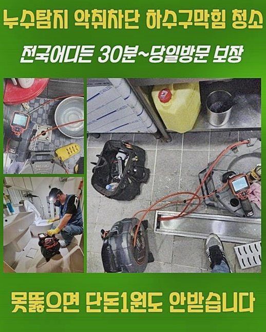
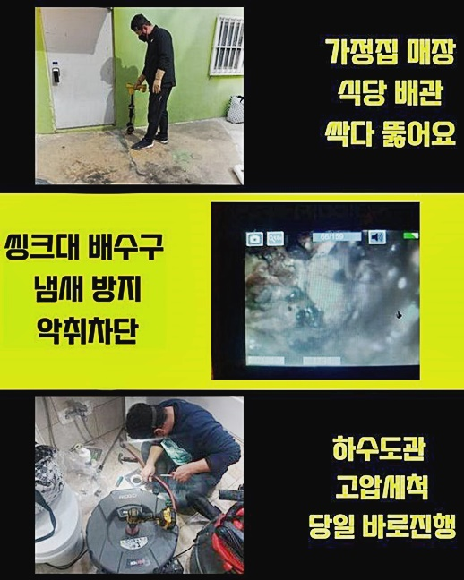
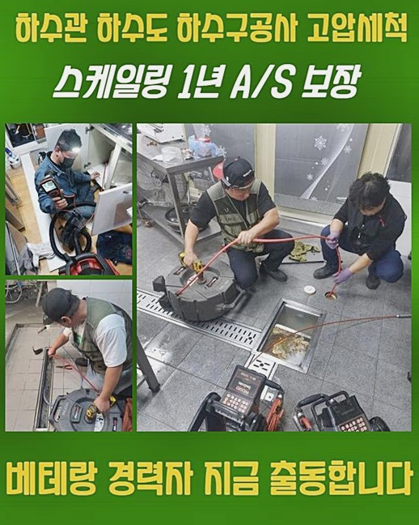
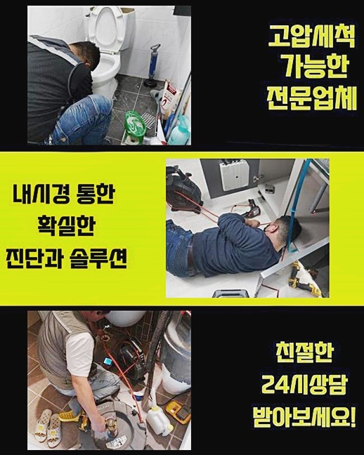
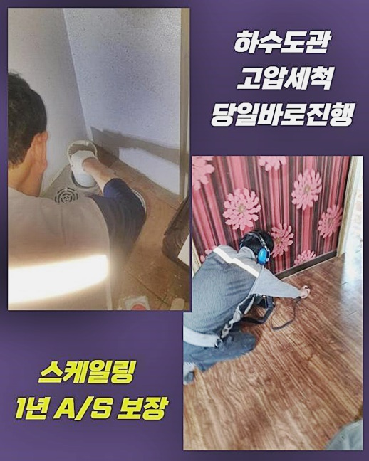

🏠 양주 마전동싱크대배수구역류 율정동 고압세척비용 배관공사
양주 마전동 싱크대막힘 전문 시공 후기

📋 작업 개요
- 위치: 양주 마전동, 마전동, 양주
- 서비스 유형: 싱크대막힘, 배관막힘, 역류해결, 뚫는업체, 배관청소, 고압세척, 설비공사, 악취차단
- 작업 일시: 2024. 7. 4. 10:06
- 업체명: 하수구수사대 (010-5615-2118)
🔍 문제 상황
양주 마전동싱크대배수구역류 율정동 고압세척비용 배관공사
배관부근에 정체현상 등이 확인된 경우라고 하면 조속하게 대응을 해 나가는 것이 제일 좋다고 말할 수 있겠지만 그냥 내버려두다가 사용이 안되버릴 때 조급하게 내방을 바라시는 분들이 대다수라고 말씀드릴 수 있겠습니다
금일은 우리가 최근에 다녀 온 의뢰자댁의 상황을 베이스로 배관막힘은 어떤 수단이 필요한 것이며 이것을 해소하려면 어떤 기기와 숙련성을 가지고 있어야 할지 설명드리는 시간을 갖도록 할게요
지금 말씀드릴 지점은 보편적인 주거지로서 의뢰자께서는 예전부터 배수가 명확하게 개운하게 나타나지 않다는 것을 직감하였지만 몇일 지나게 되면 자연히 정리될 것이라고 간주하여 가만히 방관하셨다고 하네요
허나 몇 주도 지나지 않아서 물이 반대로 유출되는 현상까지 발생하였고 점진적으로 사태가 심중해지는 모양새를 인지하고 조급히 우리에게 의뢰하신 경우였어요
우리들이 물을 쓸 때 생겨나는 여러 가지의 잔재들이 파이프 안으로 들어오게 되죠
배수관설비는 수돗물을 통하게 하는 장치로 1개의 라인으로 제작된 모양새가 대다수인데 한 곳의 집에서 반출되는 잔재들이 한 군데로 집중된다면 궁극적으로 배수관 작동 불량으로 연계되는 것이예요
그렇기 때문에 아파트나 빌라는 한 곳에서의 문제가 인접한 위치로 닿을 수 있다는 내용을 잊어버리면 안돼요

🔎 원인 분석
💡 전문가 진단: 정밀 진단 장비를 사용하여 슬러지의 고착 여부를 판명하고 타격/세척 작업을 실시했습니다.
파이프 내부로 들어온 슬러지는 물과 섞이지 않는 성향이 있기 때문에 한 개의 덩어리로 변모하며 몸집을 늘려나가는 것이 일반적입니다
이 증상이 반복적으로 일어나면 배수공간을 줄어들게 하여 물막힘의 원인이 되는거죠
그리고 외부 처리장까지 도달하지 못한 이물들이 습도로 물성이 변하면 주변으로 구린내가 진동하며 일상에 장애를 일으키게 되는 것이죠
세안을 하는 와중에 배수문으로 액체 등이 소멸되는 기세가 느리게 느껴지거나 까닭없는 고린내가 감지되는 때엔 배관찌꺼기가 쌓였을 여지를 이해하고 배관기술자들을 찾아서 차단이 생긴 까닭을 조속하게 간파해 수습에 나서야 할 것입니다
저희팀이 방문하게 된다면 우선 배관카메라를 통한 파이프를 검진하는 작업을 하는데요
배수관 내측은 협착하고 기다란 모습으로 가공되었기 때문에 겉으로만 사태를 알아내기는 힘겨우므로 카메라설비를 집어넣어서 문제가 생겨난 처소를 정확하게 알아낼 필요가 있어요
배관cctv에 관계된 액정화면으로 다각도로 상태를 파악하니 배수구 하단 등 깊은 처소를 중심으로 크고 작은 찌꺼기들이 뭉치처럼 변하여 굳어졌다는 걸 보았답니다
작업 범위를 넓혀서 뜷음을 단행해야 하는 상황에선 샤프트 분쇄 공구를 통해서 일부분에 집중된 찌꺼기 소멸 단계를 선결한 뒤 물청소 전용 기구를 넣어 전반적인 소제를 이행하는 것이 마땅한 방안이라고 안내할 수 있겠습니다

🔧 작업 과정
일상중에 쉬이 쉽게 부닥칠 수가 있는 물막힘 상황을 방예하기 위해서는 제때 안을 청소해주는 게 이상적이겠지만 매번 시간을 정해 전문업체를 찾아 나서야 하는 데에 부담스러운 마음을 느낄 수 있겠죠
반면 물흐름 중단이나 역류증상이 발발하였을 시기에 고가의 장비와 기술력을 동원하는 것과 비교해서는 정례적인 소제 관리를 이용해서 하수관을 말끔하게 관리해 나가는 것이 비용이나 시간 등을 검약하는 차원으로 되돌아온다는 걸 인식하시는 게 올바르다 말씀드립니다
부적격한 대응은 반대로 사태를 안좋은 쪽으로 변모하게 할 수 있는 부분을 기억하실 것을 바라 봅니다
군데군데 생긴 다양한 문제점을 처리하고자 샤프트기기를 삽입하여 돌처럼 굳은 이물질들을 차근차근 갈아내 주었고 벽면에 스크래치가 일어나지 않게 조심스레 뚫음을 진행하였더니 어느새 고인 액상이 소멸되는 것을 직시할 수가 있었어요
그후에 노즐을 하수관으로 넣어 전면적인 물청소 업무를 감행하였죠
빌라나 아파트와 같은 건조물은 파이프를 함께 이용할 수 있게 구성되었기에 상당한 크기의 잔재들이 한순간에 누출될 수 있기 때문에 적절한 보전물품을 써서 부근을 말끔하게 커버한 뒤 소제를 속행하는 것이 좋죠
또 배관의 구조적 문제나 성격을 파악 못 하고서 하중을 가하게 되면 부속의 파괴가 일어날 확률이 높죠
시공중에 발발하는 무요한 사안들을 방예하기 위해서는 세대의 단면이 그려져있는 사안을 파악해 보고 전반적인 구조와 개별 성향을 이해하는 것이 대단히 긴요한 요소라고 알려드립니다
우리는 첨단 제반 설비와 다양한 증험을 통하여 해당 부분을 완전하게 시행할 수 있으므로 여러 변수를 생각하고 주의하여 수리를 실행해 드리니 걱정 안하셔도 됩니다
오래도록 청소가 실행되지 못한 처소였기에 소제가 실시되는 단계에서 상당량의 이물이 쏟아져 내려오는 걸 볼 수 있었죠
토출된 슬러지를 자세하게 들여다보니 일부분에서 썩은 냄새가 나는 등 심중한 상황이라는 걸 깨달을 수 있었지요
만약에 이 양상에서 몇 주간의 시간이라도 흘려보냈다면 악순환이 반복되었을 것이 분명하였죠
훌륭한 능력을 가지고 있는 우리팀 기술진이 세세하게 맡은 임무를 실시하였더니 역류와 막힘을 일으킨 잔재들을 말끔히 소멸시킬 수 있었죠


✅ 작업 완료
처음 막힘이 발발하면 사소하게 물이 잘 안내려가는 모양새만 비춰지겠으나 시간의 흐름에 따라서 역류증세가 나타나는 등 복잡한 트러블을 대할 가능성이 높다고 볼 수 있어요
그렇기 때문에 조금이라도 고장의 기미가 나타난 경우라고 한다면 가급적 즉각적으로 처리하는 게 여러모로 이득이라고 설명해 드립니다
느닷없이 생긴 막힘을 적합하게 처리해낼 수 있는 사람을 구하신다면 믿을 수 있는 저희들과 같이 가보시는 걸 권장합니다
숙련된 기술 능력을 토대로 문제를 세심하게 분석하여 비용적인 절감도 고려하여 감당할 수 있는 길을 내놓을 것을 약조해드릴 터이니 시공이 필요한 상황이라면 아무때나 연락해 주시길 바라요



⚠️ 주방 싱크대 배관 막힘 예방 수칙
- ✅ 기름기가 묻은 식기나 프라이팬은 설거지 전 키친타올로 반드시 기름때를 닦아내세요.
- ✅ 주기적으로 싱크대 개수대에 뜨거운 물을 가득 받아 한 번에 내려 배관 내부 기름을 씻어내세요.
- ✅ 배수구 거름망을 미세한 필터로 사용하시고 음식물 찌꺼기가 틈으로 새어 들지 않게 관리하세요.
- ✅ 베이킹소다와 식초를 뜨거운 물과 함께 일주일에 한 번씩 부어주면 배관 살균과 막힘 예방에 좋습니다.
💡 핵심 정리
- 확실한 장비 작업(내시경 점검 및 샤프트 스케일링)으로 원인을 뿌리 뽑습니다.
- 작업 후 1년 이내에 동일한 부위 재발 시 100% 무상 A/S 서비스를 보장합니다.
- 서울 · 경기 · 인천 전 지역에 24시간 언제든 긴급 출동할 수 있도록 항시 대기 중입니다.
❓ 자주 묻는 질문 (FAQ)
🚨 양주 마전동 싱크대막힘 문제로 고민이신가요?
정확한 원인 진단과 확실한 시공으로 재발 없는 해결을 약속드립니다.
24시간 긴급 출동 | 서울 · 경기 · 인천 전지역 | 1년 내 재발 시 무상 A/S